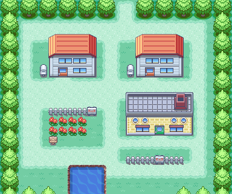
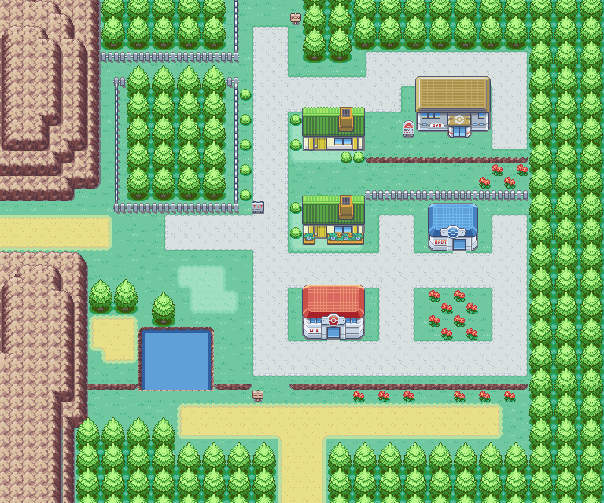
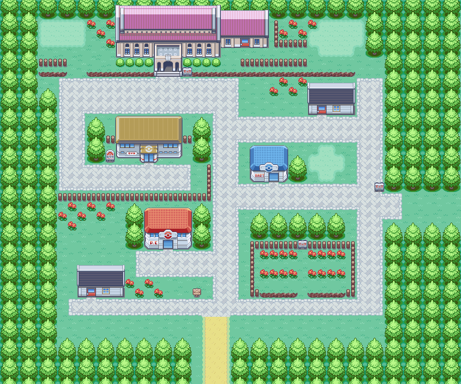
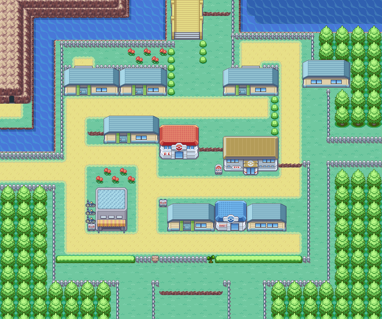
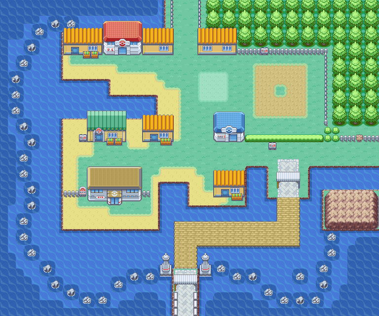
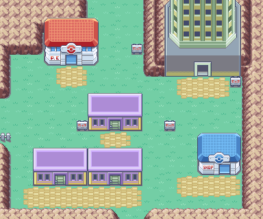
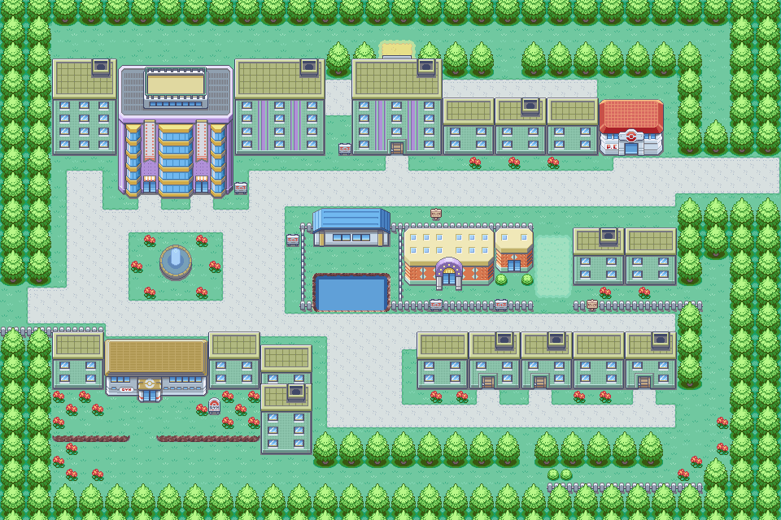
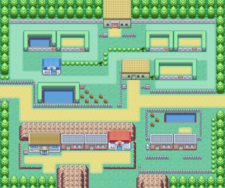
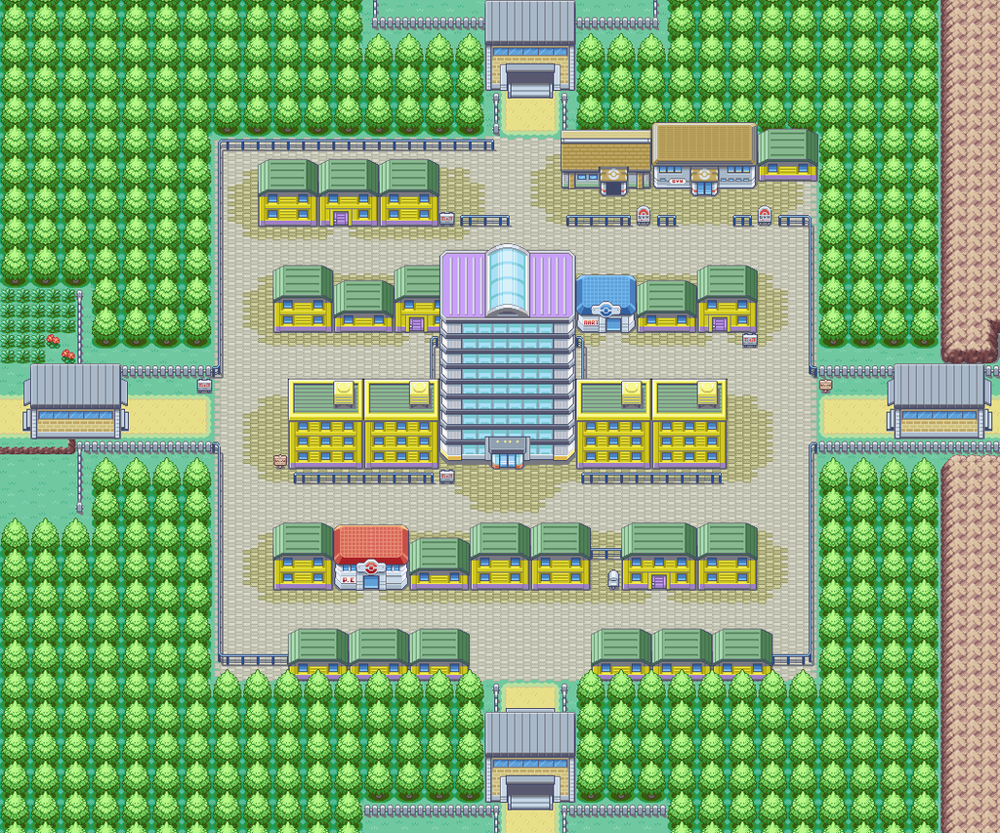
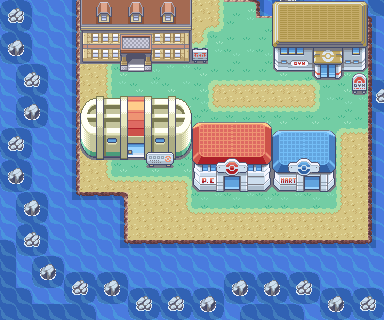

A Pokemon Trainer's Guide to the

Kanto Region

Towns of Kanto

Pallet Town (マサラタウン)
"Shades of Your Journey Await!"

A fairly new and quiet town. It's a small and pretty place.
10
Professor Oak's Laboratory
Description:
Population:
Notable Landmarks:
Viridian City (トキワシティ)
"The City of Evergreen"

A beautiful city that is enveloped in green year-round.
34
Viridian Gym
Trainers' School
Description:
Population:
Notable Landmarks:
Pewter City (ニビシティ)
"Between Rugged Mountains"

A quiet city nestled between rugged mountains and rocks.
30
Pewter Gym
Pewter Museum of Science
Description:
Population:
Notable Landmarks:
Cerulean City (ハナダシティ)
"The Floral Lagoon City"

A beautiful city with flowing water and blooming flowers.
33
Cerulean Gym
Bike Shop
Cerulean Cave
Description:
Population:
Notable Landmarks:
Vermilion City (クチバシティ)
"The Port of Exquisite Sunsets"

A southern city that is bathed in orange by the setting sun.
34
Vermilion Gym
Port
Pokemon Fan Club
Description:
Population:
Notable Landmarks:
Lavender Town (シオンタウン)
"The Noble Town"

A small town covered in a beautiful hue of purple.
30
Lavender Gym
Pokemon Tower
Description:
Population:
Notable Landmarks:
Celadon City (タマムシシティ)
"City of Rainbow Dreams"

A rich, rainbow colored city where people and Pokémon gather.
68
Celadon Gym
Celadon Dept. Store
Celadon Game Corner
Celadon Hotel
Description:
Population:
Notable Landmarks:
Fuchsia City (セキチクシティ)
"Happening and Passing City"

A historic village that has become new.
36
Fuchsia Gym
Safari Zone
Pokemon Zoo
Description:
Population:
Notable Landmarks:
Saffron City (ヤマブキシティ)
"Shining Big City"

The biggest city in Kanto, shining with a golden light.
47
Saffron Gym
Silph Co. Office
Fighting Dojo
Description:
Population:
Notable Landmarks:
Cinnabar Island (グレン島グレンタウン)
"The Fiery Town of Burning Desire"

A town used to be here until it was swept away by an eruption.
9
Cinnabar Gym
Volcano
Pokemon Mansion
Cinnabar Lab
Description:
Population:
Notable Landmarks: